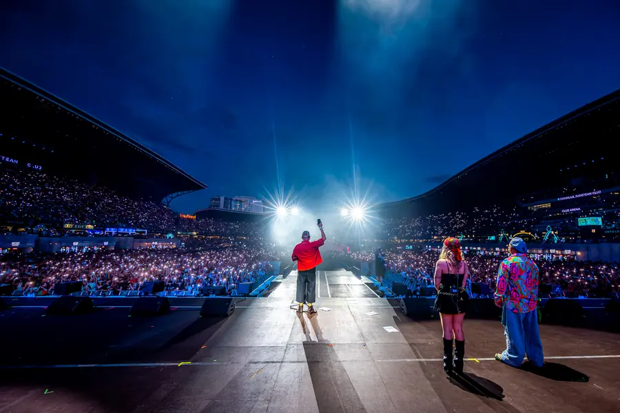
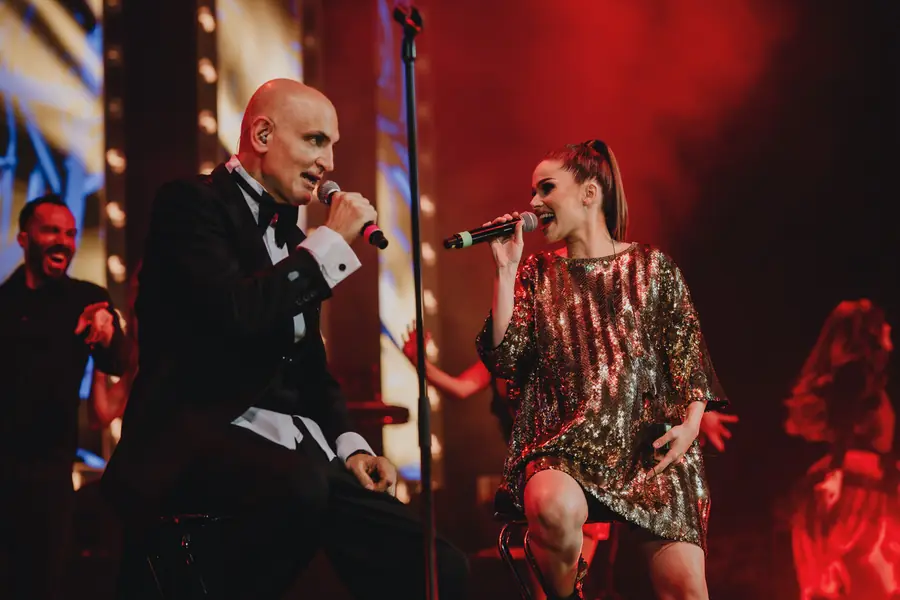
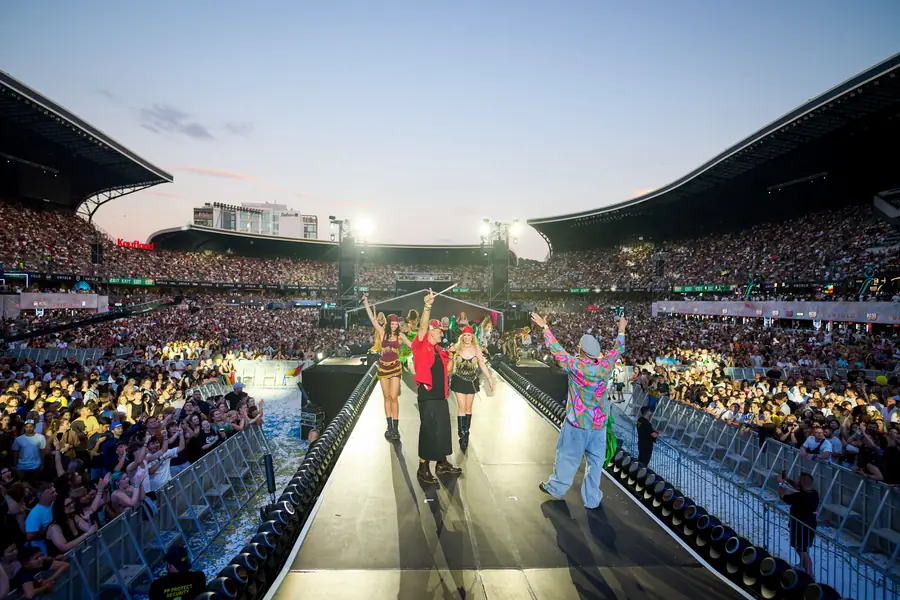

Rădăcini
Damian s-a născut la București, într-o familie de lăutari cu tradiție de generații. A luat naiul în mână de copil și nu l-a mai lăsat.
Din 2006 · Lăutari de legendă · București
Focul nu se stinge. Se cântă.
Naiul lui Damian, vioara, țambalul, acordeonul, alămurile și toba mare: o frăție de lăutari celebri care ridică orice sală în picioare cu muzică din rădăcinile Balcanilor.

01 Trupa
Damian & Brothers s-a născut în decembrie 2006, din visul lui Damian Drăghici de a aduna sub același nume lăutari de top: frați de suflet, uniți de aceeași muzică.
De atunci, trupa duce muzica lăutărească și balcanică acolo unde merită să fie: pe scene mari, în fața unui public care nu mai stă pe scaun. Tradiția nu stă în muzeu. Trăiește pe scenă.
Povestea completă

Damian s-a născut la București, într-o familie de lăutari cu tradiție de generații. A luat naiul în mână de copil și nu l-a mai lăsat.
Bursă integrală la Berklee College of Music, în Boston. Scene împărțite cu James Brown, Joe Cocker și Cyndi Lauper. Naiul românesc, dus pe scenele lumii.
Vioară, țambal, acordeon, alămuri, tobe, voci și dans. Un big band de lăutari care împletește tradiția cu jazzul, rockul și ritmurile de azi.
02 Experiența
Un concert Damian & Brothers nu se ascultă. Se trăiește, în patru timpi.
Totul începe cu un sunet de nai. O respirație, o melodie veche cât lumea, și sala tace cu sufletul la gură.
Intră vioara, țambalul și acordeonul. Apoi alămurile și toba mare. Ritmul urcă, iar palmele încep să bată singure.
Fuste care se rotesc, dansatoare, soliste și cântece pe care le știe toată sala. Din acest moment, nimeni nu mai rămâne pe scaun.
Ultimul acord se stinge, dar căldura rămâne. Oamenii pleacă acasă fredonând și se întorc la următorul concert.
Trei feluri în care Damian & Brothers transformă o seară obișnuită într-o amintire pe care oamenii o povestesc ani la rând.

Show-ul complet: big band de lăutari, soliste, dansatoare și o producție gândită pentru săli mari și festivaluri.

Gale, aniversări, nunți și petreceri de companie care merită o poveste: de la un moment-surpriză la o seară întreagă de dans.

Campanii, lansări și colaborări cu identitate românească autentică, spusă cu energia unei scene vii.

03 Următorul concert
Sala Palatului, București · Acces de la 19:00
După concertul aniversar sold-out „20 de ani de fericire” și scena principală UNTOLD, frații se întorc la Sala Palatului cu un spectacol nou. Un singur cuvânt pentru o seară întreagă: DESTIN.
Bilete pe iaBilet.ro. Concertul aniversar din martie 2026 a fost sold-out, așa că nu lăsa pe ultima sută de metri.
04 Muzica
Douăzeci de ani de drum în cinci capitole, de la primul album la vinilul aniversar.
Primul album, alături de Filarmonika Rromanes. Punctul de pornire și o promisiune ținută de atunci: focul rămâne aprins.
Album dublu, alături de Brigada Retro Mishto: clasice lăutărești reinterpretate cu poftă, în stilul inconfundabil al fraților.
Toate culorile trupei într-un singur album: lăutărie, jazz și ritmuri balcanice, puse în aceeași paletă.
Proiectul-manifest în care tradiția întâlnește rockul, alături de nume mari ale muzicii românești: Smiley, Andra, Delia, Loredana Groza, Ștefan Bănică și mulți alții.
Ediția aniversară pe vinil pentru 20 de ani de Damian & Brothers. „Ursitoarele”, „Florăresele” și tot drumul de până aici, pe suport analog.
05 Legacy
„Am fost un copil sărac într-o familie de lăutari.”
Din casa unei familii de lăutari până la Berklee, de pe străzile Bucureștiului până pe scena principală UNTOLD: povestea Damian & Brothers e povestea unei culturi care a ales să strălucească. Și a unei misiuni duse mai departe la fiecare concert: să arate lumii frumusețea și demnitatea muzicii lăutărești și a culturii rrome.
Damian se naște la București, într-o familie în care muzica se moștenește din generație în generație. Naiul devine vocea lui încă din copilărie.
Primește o bursă integrală la Berklee College of Music, pe care o absolvă în 1998. Naiul românesc intră în lumea jazzului.
Pe aceeași scenă cu James Brown, Joe Cocker și Cyndi Lauper, în turneul european Night of the Proms.
În decembrie, Damian își adună frații de scenă: lăutari celebri, cu aceeași dragoste pentru muzica lăutărească.
Primul album: tradiția lăutărească, cântată cu sunetul de azi.
Albumul dublu cu Brigada Retro Mishto, apoi o paletă întreagă de culori balcanice.
Damian sărbătorește 40 de ani de muzică printr-un concert-poveste la Sala Palatului.
Concert aniversar sold-out la Sala Palatului, vinilul „Ursitoare: Drumul” și proiectul-manifest „Gypsy Rock: Change or Die”.
Lăutărie pe Mainstage-ul UNTOLD de la Cluj-Napoca: ritmuri balcanice în fața unuia dintre cele mai mari publicuri din țară.

31 martie, Sala Palatului. Următorul capitol îl scriem împreună.
Ia-ți bilet06 Galerie
Momente de pe scenă, din stradă și de pe stadion.
07 Rezervări
Concert, festival, gală, nuntă sau lansare de brand: spune-ne ce ai în minte și construim împreună momentul.